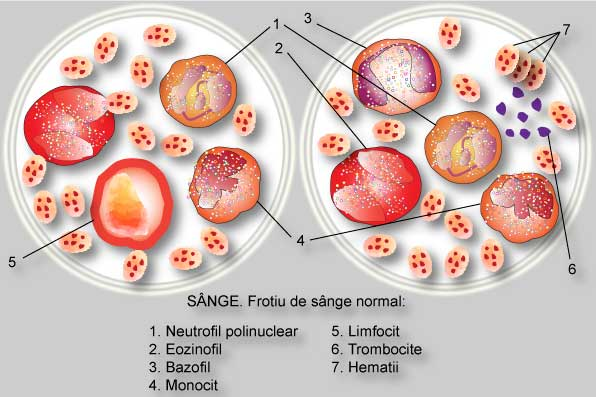
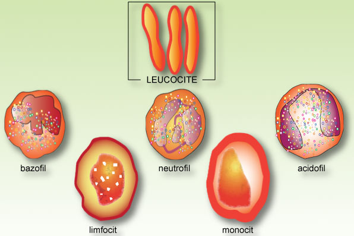
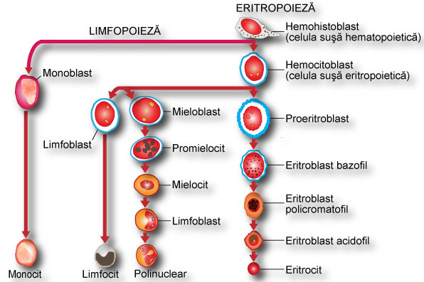
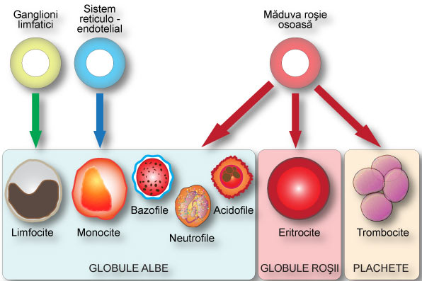

-
Componentele sângelui - Cele două componente ale sângelui sunt plasma şi elementele figurate.
- Plasma este componenta lichidă, lipsită de elemente figurate, atât a sângelui, cât şi al altor fluide din corp (lichidul cefalorahidian, limfa, lichidul seminal, lichidul interstiţial). Plasma sângelui este un lichid gălbui, uşor vâscos. Ea trebuie închipuită ca un lichid "gros" în care se află în suspensie diferite organite (elementele figurate). Plasma conţine: apă (90%), săruri minerale, proteine (albumine, globuline, fibrinogen, enzime), lipide (colesterină, picături microscopice de lipide neutre, acizi graşi), substanţe intermediare, hormoni, anticorpi, glucide. Această componentă reprezintă 55% din volumul total sângelui. Datorită compoziţiei chimice a plasmei, sângele reuşeşte să neutralizeze o serie de acizi care sunt produşi fără încetare de către ţesuturi. Plasma nu îndeplineşte funcţie respiratorie, deoarece poate dizolva o cantitate foarte mică de oxigen molecular. Lăsată liberă, plasma coagulează. Cheagul care se formează are o culoare albicioasă şi conţine multă fibrină. În timpul coagulării, fibrinogenul (proteină dizolvată în plasmă) se transformă în fibrină, componentă insolubilă. Fibrinogenul are o consistenţă vâscoasă, şi prezintă proprietatea de a se alipii de pereţii vaselor de sânge rănite, oprind hemoragia. Dacă din plasmă se exclud proteinele de coagulare, rezultă serul.
-
 Elementele figurate, reprezintă partea solidă a sângelui (45% din volumul acestuia), fiind reprezentate, după cum se poate vedea în tabelul de mai jos, prin 3 categorii de celule: eritrocite, leucocite şi trombocite. Dintre aceste elemente, doar leucocitele sunt celule adevărate (prezintă nuclei şi metabolism activ). Sângele unui adult conţine aproximativ 30.000 de miliarde de globule roşii şi 50 de miliarde de globule albe.

Leucocite 
Hematopoieza este un ansamblu de procese succesive prin care se formează şi se dezvoltă elementele figurate (celulele sanguine). Deoarece celulele sanguine mature circulante au o viaţă limitată, înlocuirea lor în mod continuu, necesită existenţa unor celule precursoare capabile să se multiplice, să se diferenţieze şi să se maturizeze până la dobândirea funcţiilor caracteristice. Toate elementele figurate, îşi au originea primordială în hemohistoblast (celula stem multipotentă), celulă capabilă să se multiplice şi apoi să se diferenţieze în celule stem unipotente (celule orientate către una din seriile sanguine), aşa cum sunt celulele stem eritropoietică, granulo-monocitopoietică, trombociopoietică şi limfopoietică. În primul trimestru de viaţă intrauterină, chiar din a III-a săptămână, începe să se formeze celulele sanguine primitive, iar apoi, din luna a II-a, activitatea hematopoietică este preluată de către ficat şi de splină. Din luna a VI - a, măduva osoasă preia treptat această funcţie generatoare. La adult, hematopoieza se realizează aproape în totalitate, în măduva vertebrelor, a coastelor, în interiorul oaselor late şi în extremitatea celor lungi. Doar monocitele şi limfocitele au o altă origine; sistemul reticulo-endotelial, respectiv ganglionii limfatici Întregul proces hematopoietic se află sub control neuroendocrin. Principiile capabile să stimuleze hematopoieza, se numesc hematopoietice. Dintre laturile hematopoiezei, aceea prin care se formează globulele roşii, poartă denumirea de eritropoieză, iar aceea prin care se formează trombocitele, se numeşte trombopoieză.Hematopoieza Celule sanguine  Ganglioni limfatici 